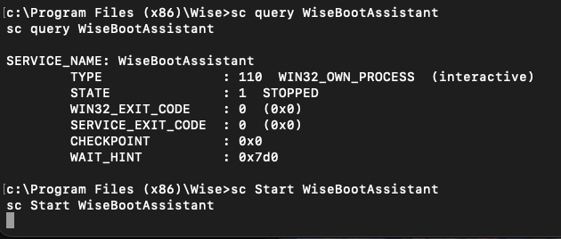
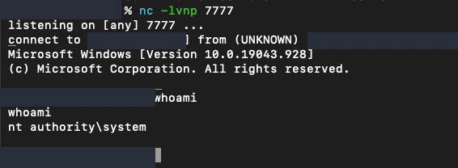

Butler
Result: SYSTEM access achieved
I reached NT AUTHORITY\SYSTEM execution (Windows’ built-in LocalSystem identity) on the Windows 10 lab VM. My notes trace Jenkins access into local enumeration and a suspicious privileged service. The final identity is captured; the exact command that caused the escalation was not retained.
Recorded sequence
- Jenkins discovery
- credential testing
- Windows execution
- WinPEAS
- WiseBootAssistant investigation
- SYSTEM shell
This sequence does not prove which service action produced the final shell.
Screenshots mask identifying details; addresses in command text are placeholders. Technical output is preserved.
Target environment
- Lab target: Butler,
<LAB_TARGET> - Operating system: Windows 10
- Architecture: Not recorded
- Service / application: Jenkins on TCP/8080
- Weakness investigated: WiseBootAssistant unquoted service path; exact escalation trigger not retained
- Scope: Intentionally vulnerable, isolated training VM
Attacking machine: Kali Linux, <LAB_KALI>.
Intentionally vulnerable, isolated training VM. Commands are lab-only; LAB_TARGET and LAB_KALI stand for the target and callback addresses on that isolated network. Credentials and unrelated local data are omitted.
1. Locate Jenkins and establish access
My notes include this reconstructed scan sequence for the services investigated in the lab; it is not saved scanner output:
sudo nmap -sS -sV -Pn -n -p 22,80,8080 "$LAB_TARGET"Jenkins, an automation server capable of running build tasks, was accessible on TCP/8080. My notes describe using Burp Suite Intruder to test login combinations against /j_spring_security_check. HTTP 302 redirects alone did not prove authentication; the subsequent workflow reached Windows execution. Credentials and the unrecorded initial-shell command are omitted.
2. Enumerate the execution context
winpeas.exeI used WinPEAS, a Windows privilege-escalation enumeration tool, to inspect the local context. The retained notes identify [LAB_ACCOUNT], high integrity, enabled administrator membership, SeImpersonatePrivilege and SeDebugPrivilege, and disabled UAC. These are context and candidate attack paths, not proof that a specific privilege was exploited.
WiseBootAssistant ran automatically as LocalSystem with this unquoted executable path:
C:\Program Files (x86)\Wise\Wise Care 365\BootTime.exe3. Inspect and test the service
My service investigation used:
sc.exe qc WiseBootAssistant
sc.exe query WiseBootAssistant
sc.exe stop WiseBootAssistant
sc.exe start WiseBootAssistant
sc.exe queryex WiseBootAssistantAn unquoted path with spaces creates ambiguous executable resolution; exploitation also requires writable candidate locations and a way to trigger execution. The service initially returned error 1053. That startup error alone neither proves nor disproves payload execution.


4. Confirm SYSTEM
My later saved screenshot shows a callback from the Butler VM to a Kali listener on TCP/7777:
# Kali listener
nc -lvnp 7777
# Captured Windows identity check
C:\Windows\system32>whoami
NT AUTHORITY\SYSTEMThis confirms SYSTEM execution. It does not identify the executable that launched, its placement, or the triggering command.


5. Findings and remediation
Jenkins access
Harden authentication and restrict build/script execution to authorized operators.
Privileged service context
Reduce build-account privileges; review unnecessary administrative membership and disabled UAC.
Unquoted service path
Quote the executable path and audit directory write permissions and service-control rights.
Verification
Retain process creation and service-start evidence to connect the trigger to the elevated process.
Result and evidence limits
Jenkins discovery, WinPEAS findings, the service misconfiguration, callback, and SYSTEM identity are documented. The initial Jenkins command, payload placement, and exact escalation trigger are not. No full unquoted-path exploit chain or remediation retest is claimed.